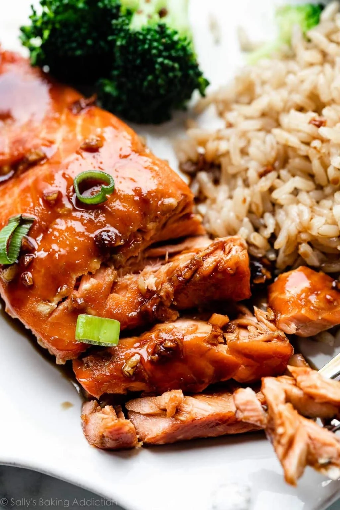

Honey Soy-Glazed Salmon

Description:
The results of this recipe are irresistible. A delightful blend
of honey, soy sauce, garlic, and ginger coats the salmon, infusing it with
deliciousness in just 30 minutes.
Ingredients:
- 12oz skinless salmon
- 1 tablespoon olive oil
- 4 cloves garlic, minced
- 2 teaspoons ginger, minced
- 1/2 teaspoon red pepper
- 1 tablespoon olive oil
- 1/3 cup less sodium soy sauce
- 1/3 cup honey
Preparation:
- Place the salmon in a sealable bag or medium bowl.
- In a small bowl or measuring cup, mix marinade ingredients.
- Pour half of the marinade over the salmon. Save the remaining marinade for later.
- Let the salmon marinate in the refrigerator for at least 30 minutes.
- In a medum pan, heat the oil. Add the salmon to the pan and discard
the use marinade. COok the salmon on one side for about 2-3 minutes, then flip over
and cook for an additional 1-2 minutes.
- Remove the salmon from the pan. Pour in the remaining marinade and reduce to a sauce like consistency
- Serve the salmon with the sauce and a side of veggies. We used broccoli.
- Enjoy!!!
Return home